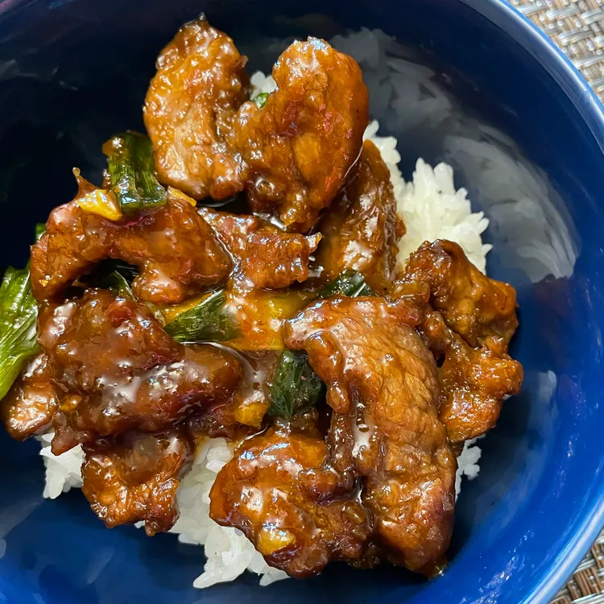

Mongliian Beef and Spring Onions

How to Make Lasagna
This Mongolian beef recipe with green onions has a soy-based sauce for a Chinese-style beef dish. Best served
over soft rice noodles or rice.
Ingredients
- 2 teaspoons vegetable oil
- 1 tablespoon finely chopped garlic
- ½ teaspoon grated fresh ginger root
- ⅔ cup dark brown sugar
- ½ cup soy sauce
- ½ cup water
- 1 pound beef flank steak, sliced 1/4 inch thick on the diagonal
- ¼ cup cornstarch
- 1 cup vegetable oil for frying
- 2 bunches green onions, cut in 2-inch lengths